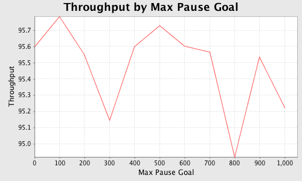

JFreeChart is a free, open source library for creating charts. Supported chart types include area, bar, box and whisker, bubble, candlestick, Gantt, high/low, histogram, line, multiple pie, pie, polar, ring, scatter, stacked area, stacked bar, stacked X/Y area, time series, wafer map, waterfall, wind, X/Y area, X/Y bar, X/Y line, X/Y step area and X/Y step. Output can be produced in many formats including Swing components, PNG, JPEG, PDF and SVG. A book on JFreeChart is available for $48.75 from here. JFreeChart can be downloaded from here. API documentation is here.
The data in this example represents the percentage of the runtime of a Java application that is not used for garbage collection, a.k.a. throughput.
import java.io.*; import java.util.StringTokenizer; import org.jfree.chart.*; import org.jfree.chart.plot.*; import org.jfree.data.xy.*; /** * This class creates an XY chart using the data in gc.csv. * * @author R. Mark Volkmann, Object Computing, Inc. */ public class ChartCreator { private static final boolean SHOW_LEGEND = false; private static final boolean SHOW_TOOLTIPS = false; private static final boolean GENERATE_URLS = false; public static void main(String[] args) throws IOException { FileReader fr = new FileReader("gc.csv"); BufferedReader br = new BufferedReader(fr); // Get the x-axis label from the first token in the first line // and the y-axis label from the last token in the first line. String line = br.readLine(); StringTokenizer st = new StringTokenizer(line, ","); String xLabel = st.nextToken(); String yLabel = st.nextToken(); while (st.hasMoreTokens()) yLabel = st.nextToken(); String title = yLabel + " by " + xLabel; // Get the data to plot from the remaining lines. float minY = Float.MAX_VALUE; float maxY = -Float.MAX_VALUE; XYSeries series = new XYSeries("?"); while (true) { line = br.readLine(); if (line == null) break; st = new StringTokenizer(line, ","); // The first token is the x value. String xValue = st.nextToken(); // The last token is the y value. String yValue = ""; while (st.hasMoreTokens()) yValue = st.nextToken(); float x = Float.parseFloat(xValue); float y = Float.parseFloat(yValue); series.add(x, y); minY = Math.min(y, minY); maxY = Math.max(y, maxY); } XYSeriesCollection dataset = new XYSeriesCollection(); dataset.addSeries(series); JFreeChart chart = ChartFactory.createXYLineChart( title, xLabel, yLabel, dataset, PlotOrientation.VERTICAL, SHOW_LEGEND, SHOW_TOOLTIPS, GENERATE_URLS); XYPlot plot = chart.getXYPlot(); plot.getRangeAxis().setRange(minY, maxY); int width = 500; int height = 300; ChartUtilities.saveChartAsPNG( new File("gc.png"), chart, width, height); } }
Here's the comma-separted input file, gc.csv.
Max Pause Goal,Minor Collections,Major Collections,Pause Count,Max Pause,GC Time,Total Time, Throughput 0,49,0,49,0.005,0.081,1.831,95.599 100,49,0,49,0.005,0.077,1.828,95.785 200,49,0,49,0.005,0.081,1.829,95.550 300,47,0,47,0.009,0.089,1.837,95.145 400,48,0,48,0.005,0.081,1.835,95.598 500,48,0,48,0.005,0.078,1.825,95.729 600,49,0,49,0.005,0.081,1.830,95.600 700,48,0,48,0.005,0.081,1.828,95.564 800,44,0,44,0.017,0.094,1.857,94.919 900,49,0,49,0.006,0.082,1.833,95.533 1000,49,0,49,0.005,0.088,1.840,95.224
Here's the chart that is produced by JFreeChart in this example.
Google Charts is one alternative. However, it is targeted at generating charts for display in web browsers. An HTTP GET request must be sent to a Google URL. The URL contains request parameters that specify chart details, including the data to be charted. The "Developer Guide" is here. The number of supported chart types and output formats are very limited in comparison to JFreeChart. See the "Chart type" link on the Developer Guide page. Only PNG output is supported.
Copyright © 2008 Object Computing, Inc. All rights reserved.